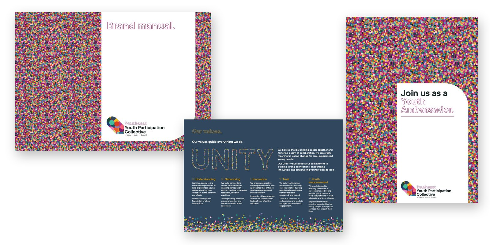
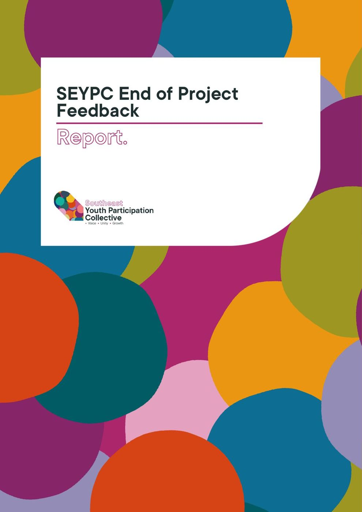
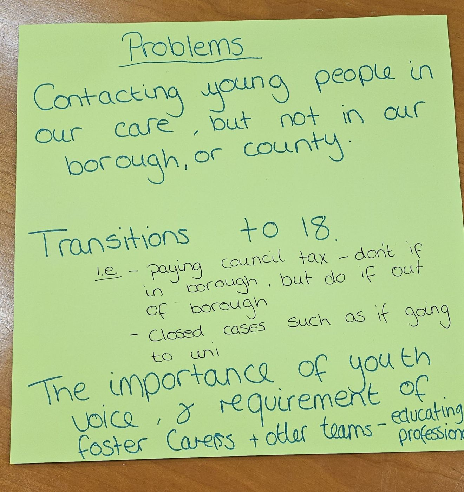
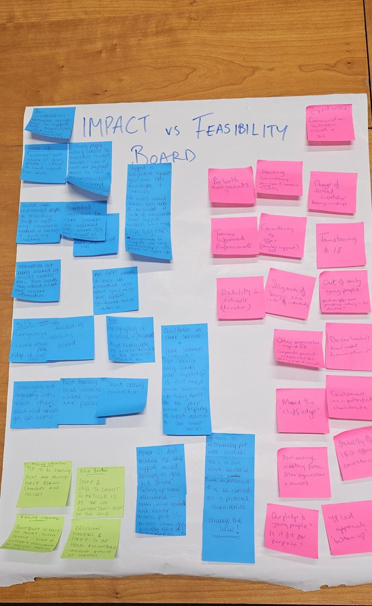
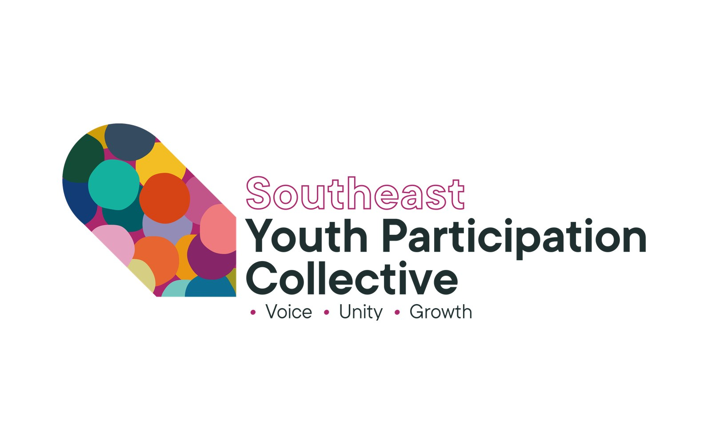

n
nRegional Care Cooperative, South East: a youth participation collective, named and branded by the young people in it
Participation work across the South East was happening council by council, with no shared network and no consistent way for care-experienced young people to be heard regionally. We brought participation workers together and ran a co-design process with young people that gave the region a name, a brand and a Shadow Board of its own.

The starting point
Participation teams across the South East’s local authorities were each doing their own thing: real effort, but fragmented, under-resourced, and with no shared network to learn from each other or pool what worked. Some leaders wanted young people in the room, but without a consistent approach, that risked becoming tokenistic rather than young people actually shaping decisions.
What we did
- NetworkA regional networkParticipation workers and Youth Ambassadors from local authorities across the South East, brought together for the first time as one group rather than separate council teams
- BrandA name and a visual identityThe Southeast Youth Participation Collective, with a colour system where each dot represents an individual young person, and a brandmark shaped like a compass across the region’s four sub-areas
- GovernanceA full policy suiteSeven documents written for the Collective and the Regional Care Cooperative: a Safeguarding Policy, Code of Conduct, Conflict and Complaints procedure, Consultation and Decision-making protocol, Governance Agreement, Consultation request process, and Digital Communication policy
- Shadow Board18 Youth AmbassadorsA full proposal covering recruitment, a payment structure, governance tiers and a 12-month implementation plan, launched at a dedicated workshop in May 2025
- TrainingSessions for the regionTraining delivered to the regional Children in Care Council and to the Regional Care Cooperative itself
Five sessions, January to May
Each month brought Youth Ambassadors and participation workers from across the region into the same room. The sessions built deliberately: from surfacing what wasn’t working, to the practical tools to plan a project, to actually making something.
- JanuaryCo-designAn open, often challenging conversation about inconsistencies between counties and where young people’s voices were going unheard
- FebruaryPlanning basicsSWOT analysis and SMART goals, turning ideas into projects with clear resourcing needs
- MarchChoosing the projectsThe group voted to pursue two ideas: a webinar series led by Youth Ambassadors for professionals, and a milestone-based recognition programme modelled on the Duke of Edinburgh Award
- AprilIdeationThe group narrowed to the webinar series, with the RCC’s Helen Humphreys joining to align it with regional priorities
- MaySkills and filmingA professional filmmaker worked with the Youth Ambassadors on storytelling and camera technique, and the group filmed content for the webinar series on the day
How we worked
The brand came from the young people, not for them. In the sessions, individuals were represented as dots, each with a slightly different form and its own colour, which is how the Collective still describes itself: individuals coming together as more than the sum of their parts. The Collective’s own language for its goals follows that same young-people-first approach: VOICE for what it’s working towards, UNITY for its values, GROWTH for how it will know it’s worked.
What changed
The region went from separate, fragmented participation efforts to one named, branded Collective with a governance structure built around it: a full Shadow Board proposal for 18 Youth Ambassadors, a seven-document policy suite for the Regional Care Cooperative, and training delivered to both the regional Children in Care Council and the RCC itself. By the May session, Youth Ambassadors had moved from ideas on a page to filming their own content for a webinar series aimed at the professionals who work with them. The project reached 80% of its agreed KPIs by the time of handover.
What runs now
The Collective’s design, structure and materials were formally handed over to the Regional Care Cooperative, which has since recruited a worker to lead youth participation and take the Collective forward regionally.
See the work
What we made, and what it looked like.
The brand
The Southeast Youth Participation Collective: name, logo and guidelines, designed with young people.
Co-design workshops
Flipcharts, sticky notes and 18 Youth Ambassadors shaping a regional service.
End-of-project report
The feedback and the model, written up for the Regional Care Cooperative.
Ambassador sign-up
Materials to recruit the next young people.



